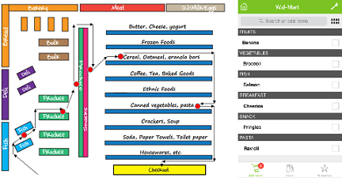
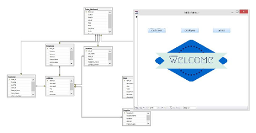

Hi there! This is Huiyao Dong. You can call me Karen also.
I graduated from University of Texas at Dallas in August 2016, with my
Master degree of Information Technology and Management. I enjoy
coding and building new things especially database and web application.
I am working on my engineer certificate and earned MCSA recently.
To view my resume, please click here
Certifcation
Microsoft Certified System Administrator: SQL Server 2012/2014
Google Analysis Individual Qualification
UT Dallas SAS Institute Certificate
Programming
Language - SQL, Python, HTML, CSS, javaScript, jQuery, C#, .NET, SAS
Database - SQL Server, Access, Oracle, MySQL
Framewok - Flask, Django, NET Entity Framework
[EXPERIENCE]
Data Analyst
KT&G (Jan 2017 - present)Main Duty:
- Develop the Salesforce system, including database structure design, data migration and integration development, dashboard design
- Integrate customers and marketing multiple data sources from MIS and ERP with database tools such as MS Access and SQL Server to generate insights
- Generate scheduled monthly reports for business performance, expenses, and research of market trends and prices
- Develop analytics dashboard and automated reports with business intelligence tool like Power BI and Tableau
- Utilize VBA and Power Pivot to develop finance model and reports for performance appraisal
- Conduct statistics analysis based on raw sales data to predict trends and forecast future performance and costs
Data Analyst
Blue Cross and Blue Shield of Texas (Aug 2016 - Dec 2016)Main Duty:
- Developed and maintained stored functions and procedures in Oracle
- Processed, organized, coordinated data and generated reports for commissions' analysis and adjustments
- Established Access Reporting Database System and worked with Visual Basic codes for certain projects
- Designed SQL database, developed ETL packages with SSIS for automatic data transformation in from Callidus Database and Access Database
Database Analyst Internship
Aberg Center for Literacy (Jan 2016 - Jul 2016)Main Duty:
- Built relational database and Maintained database models stored in SalesForce and MySQL
- Analyzed survey data with descriptive statistics and inferential statistics with Excel, SQL and SOQL
- Generated reports statistical graphs using VBA, Pivot table and SalesForce reporting tools
- Designed website testing and web analysis procedure
MIS Lab Assistant
The University of Texas at Dallas (Jan 2015 - Dec 2015)Main Duty:
- Built Excel online course for UT Dallas students for self-study and preparation for Excel certification
- Guided students weekly for their project related to Excel, Access and SQL server
- Provided information on Excel certification to students and helped them with exam preparation
- Organized Excel workshops with student organizations and instructed Excel skills
Accounting Internship
Qinhuangdao Qiushi CPA Co. - China (Sep 2012 - Jan 2013)Main Duty:
- Audited and analyzed data of bank accounts and investments with MS Access for 18-20 clients monthly
- Assisted team with tax consultant and reporting by analyzing cost and taxes
Cost Management Internship
Sinolion Real Estate Group Co., Ltd. - China (Jul 2010 - Aug 2010)
Main Duty:
- Created and maintained documentation for real estate projects to support further quality assurance research
- Analyzed data for investment evaluation using advanced Excel functions like VBA and pivot tables
- Generated cost reports monthly and on an as-needed basis with SAP, Financial Accounting module
[PROJECT]
-
Taste N Color
Web Development with HTML5


-

Tree hollow (Django)
Web Development with Django & AWS


-

"Optimized Shopper" Design
Java-based Software Design
-

"Retail Stores DB" Design
Relational Database Design
[EDUCATION]
M.S., Information Technology and Management
University of Texas at Dallas (2014 - 2016)
*Data Management(SQL)
*Object Oriented Programming(Java)
*Business Data Warehousing(SAP, Crystal Report and Tableau)
*Spreadsheet Modeling(Advance Excel)
*Business Intelligence(SAS and R programming)
*Quantitative Introduction to Risk and Uncertainty in Business<
*System Analysis and Project Management
(Object-oriented systems analysis and software design)
*Advance Business Intelligence with SAS Programming
(Buliding statistics models with SAS)
*Operation Management
(Methods and management strategies of project)
B.A., Accounting
Yanshan University (2009 - 2013)
*Finance Software Design with Visual Basic
*Management Information System
*Accounting Information System with ERP Software
*Enterprise Management Simulation with Sand Table
*Financial Management and Analysis
*Financial Accounting
*Marketing Management
[INDEPENDENT STUDY]
Analysis of David Medical Profitability based on DuPont Analysis Method
(Published Research Thesis)Huiyao Dong, Analysis of David Medical Profitability Based on DuPont Analysis[J],
Value Engineering, 2012(12), ISSN 1006-4311 CN-13-1085/N, Page 156-158
article:1006-4311(2012)34-0156-03
This paper used reliable correlative relevant financial indicators to do the three-year profitability analysis with DuPont Financial Analysis Method. This discourse took David medicine company as the main body and conducted analysis work based on the financial statements from 2009 - 2012, combined with industry background analysis and the company's development strategy, to find the current financial problems.
Taking all results in consideration, we put forward some counter measures for the operation problems according to the company's status.
Key words: Financial Management, Profitability, Capital Profit Analysis
Evaluation of the Economic Development and Profitability of Chinese Telecom Service Industry
Research Thesis for Bachelor DegreeEconomic Value Added, one of the most popular finance analysis factor in U.S. company, is not commonly used in China.
This thesis aimed to assess the value of listing corporation in telecom service industry and the ability of creating value enterprises by Economic Value Added model. Based on the result of analysis, we put forward several suggestions for improvement.To ensure the accuracy of analysis, we made necessary adjustments to collected data and run regression analysis with SPSS. We also used other statistics function of SPSS for finance data analysis.
The aim of this research is to improve the ability of the telecom industry to create value.
Keywords: Telecom Service Industry, Economic Value Added, SPSS
[CERTIFICATION]
Microsoft Certified System Administrator: SQL Server 2012/2014
Certificate#: G136-5495
Microsoft Technology Associate: Database Fundamentals
Certificate#: F730-3159
Google Analysis Individual Qualification
UT Dallas SAS Institute Certificate in Business Intelligence and Data Mining
[CONTACT ME]
You can reach me by mail:

You are also welcomed to connect me on likedin!